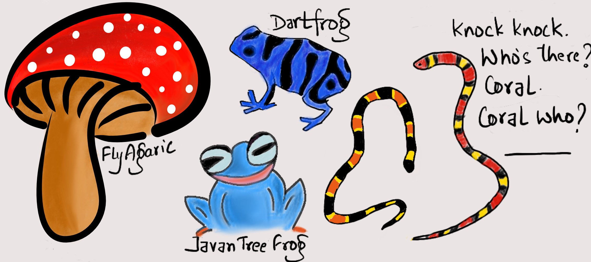

Staying alive requires knowing truths.
Knowing which mushrooms are poisonous. How poisonous?
Are all bright colored things poisonous?
How do poisons harm us? How do we make antidotes?

Knowing how to fight a global pandemic.
Knowing how to turn an asteroid heading towards us into dust.
Knowing how to create electricity out of thin air.
Truth gives us godly powers, would we also need godly character.
But how do we know what is true? Is there something like absolute truth?
If it helps us survive better - it's must be true. A white lie must be true?